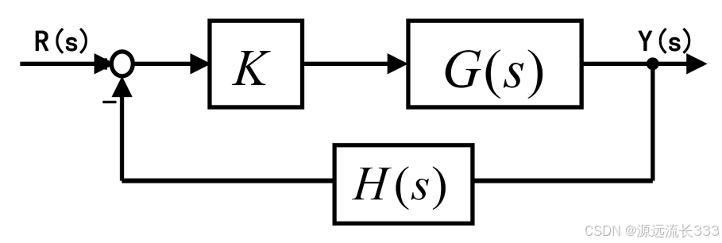
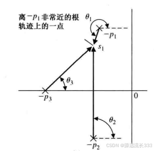

1. 复数的相角表示
设有复数 \(z=a+bi\)，其中 \(a\) 为实部、\(b\) 为虚部，则
其中 \(r\) 是幅值，\(\theta\) 是相角。在复平面上，\(\theta\) 可以表示为由原点指向 \(z\) 的向量与实轴正方向之间的夹角。
考虑两个复数 \(z_1,z_2\)，则
两个复数相乘时，结果的相角等于两者相角之和；两个复数相除时，结果的相角等于两者相角之差。
同时
因此，\(z_1-z_2\) 对应一个从 \(z_2\) 指向 \(z_1\) 的向量。它的相角 \(\angle(z_1-z_2)\) 就是该向量与实轴正方向之间的夹角。这个观察是理解根轨迹相角条件的关键。
2. 根轨迹相角条件
考虑一个带有增益 \(K\) 的反馈系统：

闭环特征方程为
也就是
复数 \(-1\) 的相角为 \((2k+1)\pi\)，因此根轨迹上的点必须满足相角条件
其中 \(k=0,1,2,\ldots,n-m-1\)。
设开环传递函数可以写成零极点形式
其中 \(z_i\) 为零点，\(p_i\) 为极点。由于乘积与相除分别对应相角的加减，所以
于是相角条件也可以写成
根轨迹上的一点与各零点连线的相角之和，减去它与各极点连线的相角之和， 应当等于 \(180^\circ\) 的奇数倍。
3. 出射角与入射角
3.1 出射角
现代控制理论教材通常把出射角定义为“相角差的主值”，这个说法不够直观。 从几何上看，出射角就是根轨迹离开极点时，极处切线与实轴正方向之间的夹角。

要求极点 \(p_1\) 处的出射角，可以在根轨迹上取一点 \(s_1\)，并让 \(s_1\) 无限接近 \(p_1\)。此时切线方向可以用 \(p_1s_1\) 与实轴正方向的夹角 \(\theta_1\) 表示，即
因为 \(s_1\) 在根轨迹上，它满足相角条件：
将与 \(p_1\) 对应的项移到一边，得到
令 \(s_1\to p_1\)，再把下标 \(1\) 换成一般的 \(r\)，便得到极点 \(p_r\) 处的出射角：
其中 \(k=0,\pm1,\pm2,\ldots\)。实际计算时，通常取相角的主值。
3.2 入射角
同理，可以从零点 \(z_r\) 出发考察根轨迹到达零点时的方向，得到入射角
出射角描述根轨迹如何离开极点，入射角描述根轨迹如何进入零点。 两者都可以由同一条相角条件推出，区别只在于考察点分别趋近于极点或零点。
4. 结论速查
\[ \sum_{j=1}^{m}\angle(s-z_j) -\sum_{i=1}^{n}\angle(s-p_i) =180^\circ+k\,360^\circ \]
\[ \theta_r =(2k+1)\pi +\sum_{j=1}^{m}\angle(p_r-z_j) -\sum_{\substack{i=1\\i\neq r}}^{n}\angle(p_r-p_i) \]
\[ \phi_r =(2k+1)\pi -\sum_{\substack{j=1\\j\neq r}}^{m}\angle(z_r-z_j) +\sum_{i=1}^{n}\angle(z_r-p_i) \]
参考资料
- 南京大学控制理论课程。
- 《现代控制理论》，第十二版。
如有错误，欢迎指正。